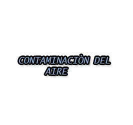
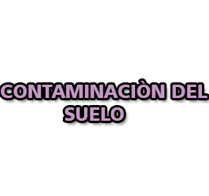
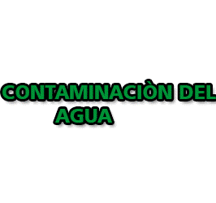
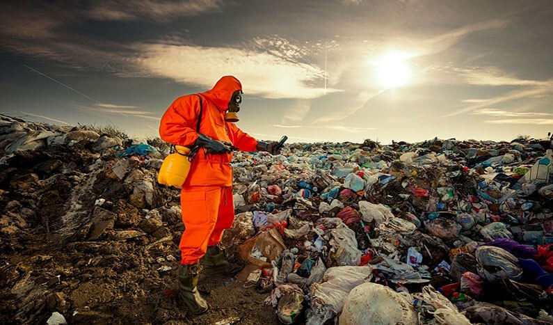

| |
 |
 |
 |
|
La contanimacion ambiental es la presencia de componentes nocivos, bien sean de naturaleza biologia, quimica o de otra clase, en el medioambiente, de modo que suponga un perjuicio para los seres vivos que habitan un espacio, incluyendo,por supuesto, a los seres humanos. |
CAUSAS DE LA CONTAMINACION AMBIENTAL |
||
TALA EXCESIVA DE ARBOLES |
La tala ilegal de madera degrada el bosque, amenaza a miles de especies unicas y,con ello,nos afecta atodos. | |
| Los procesos y actividades industriales que generan emeciones de contaminantes como el oxigeno de nitróno,el amoniaco,el mercurio y el dióxido de carbono,que contaminan el agua,el aire y el suelo y daña la salud humana. | ||
| La materia organica acumulada durante millones de años debajo de las capas de la corteza terreste y el fondo de lagos y mares sufre diversas alteraciones debido al aumento de la presión y la temperatura del suelo. | ||
|  |  | < |
|
La exposiciòn a altos niveles de contaminaciòn del aire puede causar una variedad de esfectos adversos para la salud : aumenta el riesgo de infecciones respiratorias, enfermedades cardiacas, accidentes cerebrovaculres y cancer de pulmònn, las cuales afectan en mayor proporciòn a poblacion vulnerables. |
|
La contaminación del aire puede aumentar el riesgo de infecciones respiratorias, enfermedades cardíacas, accidentes cerebrovasculares y cáncer de pulmón. Tanto la exposición a corto como a largo plazo a los contaminantes del aire se ha asociado con impactos adversos en la salud. |
|
La contaminación del suelo es una alteración del suelo por la presencia de sustancias químicas producidas por el hombre. En otras palabras, es la degradación o destrucción de la superficie y del suelo como resultado de la acción directa o indirecta de los seres humanos. |
|
Se define como la acumulación de una o más sustancias ajenas al agua que pueden generar una gran cantidad de consecuencias, entre las que se incluye el desequilibrio en la vida de los seres vivos (animales, plantas y personas). |
 |
El medio ambiente es de vital importancia para todos los seres vivos del planeta. No solo proporciona los recursos naturales que necesitamos para sobrevivir, como el agua, el aire, los alimentos y la energía, sino que también alberga una biodiversidad impresionante que contribuye al equilibrio ecológico. |
|  |